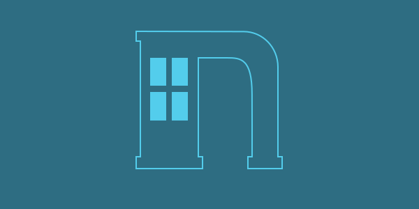

Nebrhood
Nebrhood is a community-focused social media platform that I worked on with Acenonyx. The site will serve as a news source and communication tool between users, local politicians, and fellow citizens. I was responsible for the UI/UX design and testing.